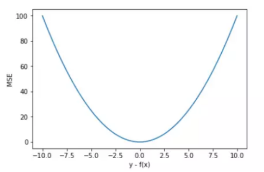
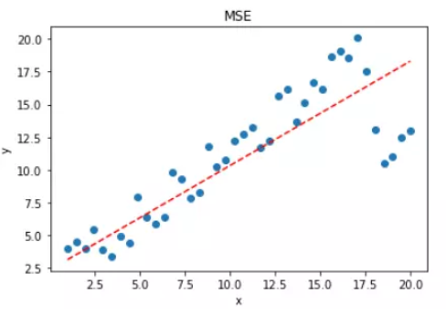
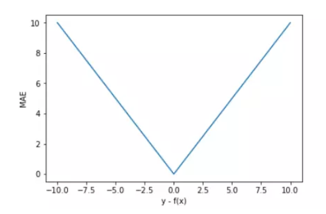
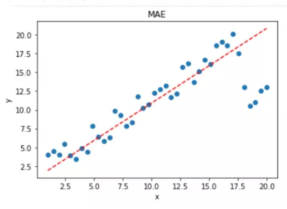
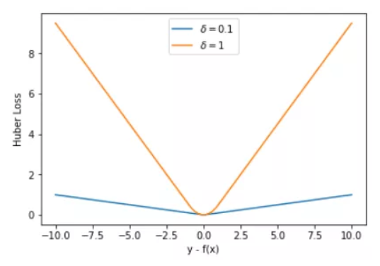

1 线性回归
1.1 问题1
假设我们有一些数据x 1 , … , x n ∈ R x_1, \ldots, x_n \in \mathbb{R} x 1 , … , x n ∈ R b b b ∑ i ( x i − b ) 2 \sum_i (x_i - b)^2 ∑ i ( x i − b ) 2
找到最优值b b b
这个问题及其解与正态分布有什么关系?
1.1.1 第一问
线性回归的解可以用一个公式简单地表示，这类解叫做解析解 。
argmin b ∑ i = 1 n ( x i − b ) 2 ⇒ ∂ ∑ i = 1 n ( x i − b ) 2 ∂ b = 0 ⇒ ∑ i = 1 n ( x i − b ) = 0 ⇒ ∑ i = 1 n x i = n b ⇒ b = ∑ i = 1 n x i n \begin{array}{c}\underset{b}{\operatorname{argmin}} \sum_{i=1}^{n}\left(x_{i}-b\right)^{2} \\ \Rightarrow \frac{\partial \sum_{i=1}^{n}\left(x_{i}-b\right)^{2}}{\partial b}=0 \\ \Rightarrow \sum_{i=1}^{n}\left(x_{i}-b\right)=0 \\ \Rightarrow \sum_{i=1}^{n} x_{i}=n b \\ \Rightarrow b=\frac{\sum_{i=1}^{n} x_{i}}{n}\end{array}
b a r g m i n ∑ i = 1 n ( x i − b ) 2 ⇒ ∂ b ∂ ∑ i = 1 n ( x i − b ) 2 = 0 ⇒ ∑ i = 1 n ( x i − b ) = 0 ⇒ ∑ i = 1 n x i = n b ⇒ b = n ∑ i = 1 n x i
就相当于对目标表达式进行求偏导，这里求出来b就是均值。
1.1.2 第二问
均方误差损失函数可以用于线性回归的一个原因是：假设观测中包含噪声，其中遭声服从正态分布，噪声正态分布如下式：令x i = b + ϵ x_{i}=b+\epsilon x i = b + ϵ ϵ ∼ N ( 0 , σ 2 ) \epsilon \sim \mathcal{N}\left(0, \sigma^{2}\right) ϵ ∼ N ( 0 , σ 2 )
P ( x i ∣ b ) = 1 2 π σ 2 exp ( − 1 2 σ 2 ( x i − b ) 2 ) P\left(x_{i} \mid b\right)=\frac{1}{\sqrt{2 \pi \sigma^{2}}} \exp \left(-\frac{1}{2 \sigma^{2}}\left(x_{i}-b\right)^{2}\right)
P ( x i ∣ b ) = 2 π σ 2 1 exp ( − 2 σ 2 1 ( x i − b ) 2 )
P ( x ∣ b ) = ∏ i = 1 n p ( x i ∣ b ) P(x \mid b)=\prod_{i=1}^{n} p\left(x_{i} \mid b\right)
P ( x ∣ b ) = i = 1 ∏ n p ( x i ∣ b )
− log P ( x ∣ b ) = n 2 log ( 2 π σ 2 ) + ∑ i = 1 n 1 2 σ 2 ( x i − b ) 2 -\log P(x \mid b)=\frac{n}{2} \log \left(2 \pi \sigma^{2}\right)+\sum_{i=1}^{n} \frac{1}{2 \sigma^{2}}\left(x_{i}-b\right)^{2}
− log P ( x ∣ b ) = 2 n log ( 2 π σ 2 ) + i = 1 ∑ n 2 σ 2 1 ( x i − b ) 2
此时求argmax b P ( x ∣ b ) \operatorname{argmax}_{b} P(x \mid b) a r g m a x b P ( x ∣ b )
argmin b − log P ( x ∣ b ) = argmin b ∑ i = 1 n ( x i − b ) 2 \operatorname{argmin}_{b}-\log P(x \mid b)=\operatorname{argmin}_{b} \sum_{i=1}^{n}\left(x_{i}-b\right)^{2}
a r g m i n b − log P ( x ∣ b ) = a r g m i n b i = 1 ∑ n ( x i − b ) 2
也即求上一问题的解析解。因此，在高斯噪声的假设下，最小化均方误差等价于对线性模型的极大似然估计。
1.2 问题2
推导出使用平方误差的线性回归优化问题的解析解。为了简化问题，可以忽略偏置b b b X \mathbf X X
用矩阵和向量表示法写出优化问题（将所有数据视为单个矩阵，将所有目标值视为单个向量）。
计算损失对w w w
通过将梯度设为0、求解矩阵方程来找到解析解。
什么时候可能比使用随机梯度下降更好？这种方法何时会失效？
1.2.1 第一问
< ^ ! − − s w i g  3 − − > n , q = X n , d + 1 w d + 1 , q \hat_{n, q}={X}_{n, d+1} {w}_{d+1, q}
< ^ ! − − s w i g  3 − − > n , q = X n , d + 1 w d + 1 , q
1.2.2 第二问
L = 1 2 ( Y − < ^ ! − − s w i g  4 − − > ) 2 L=\frac{1}{2}({Y}-\hat)^{2}
L = 2 1 ( Y − < ^ ! − − s w i g  4 − − > ) 2
∂ L ∂ w = ∂ 1 2 ( Y − X w ) 2 ∂ w = ( Y − X w ) ( − X ⊤ ) \frac{\partial {L}}{\partial {w}}=\frac{\partial \frac{1}{2}({Y}-{X} {w})^{2}}{\partial {w}}=({Y}-{X} {w})\left(-{X}^{\top}\right)
∂ w ∂ L = ∂ w ∂ 2 1 ( Y − X w ) 2 = ( Y − X w ) ( − X ⊤ )
1.2.3 第三问
( Y − X w ) ( − X ⊤ ) = 0 ({Y}-{X} {w})\left(-{X}^{\top}\right)=0
( Y − X w ) ( − X ⊤ ) = 0
− X T Y + X T X w = 0 -X^TY+X^TXw=0
− X T Y + X T X w = 0
则 w ∗ = ( X T X ) − 1 X T Y 则w^*=(X^TX)^{-1}X^TY
则 w ∗ = ( X T X ) − 1 X T Y
1.2.4 第四问
解析解可能比使用随机梯度下降（SGD）更好的情况包括：
简单问题 ：解析解通常适用于简单的问题，其中目标函数和约束条件很容易求导并求解。在这种情况下，直接计算解析解比使用SGD更高效。小规模数据集 ：对于小规模的数据集，计算解析解可以很快完成，并且由于数据量较小，解析解的计算开销相对较小。显式公式要求 ：某些应用场景可能要求得到显式的公式解析解，例如需要解释、推导或证明的问题。
然而，解析解的方法在以下情况下可能会失效：
复杂问题 ：对于复杂的问题，目标函数和约束条件可能很难求导或求解，或者求解过程可能非常复杂甚至不存在解析解。在这种情况下，使用SGD等数值优化算法可能更适合。大规模数据集 ：对于大规模数据集，计算解析解的计算复杂度可能非常高，甚至无法完成。在这种情况下，SGD通常更具可行性和可扩展性。随机性和噪声 ：如果目标函数存在随机性或噪声，并且我们希望在优化过程中考虑到这些因素，那么SGD等迭代方法通常更合适，因为它们可以根据采样的随机梯度进行逐步的调整。
像线性回归这样的简单问题存在解析解，但并不是所有的问题都存在解析解。
解析解可以进行很好的数学分析，但解析解对问题的限制很严格，导致它无法广泛应用在深度学习里。
1.3 问题3
假定控制附加噪声ϵ \epsilon ϵ p ( ϵ ) = 1 2 exp ( − ∣ ϵ ∣ ) p(\epsilon) = \frac{1}{2} \exp(-|\epsilon|) p ( ϵ ) = 2 1 exp ( − ∣ ϵ ∣ )
写出模型− log P ( y ∣ X ) -\log P(\mathbf y \mid \mathbf X) − log P ( y ∣ X )
请试着写出解析解。
提出一种随机梯度下降算法来解决这个问题。哪里可能出错？（提示：当我们不断更新参数时，在驻点附近会发生什么情况）请尝试解决这个问题。
1.3.1 第一问
令 y = w T X + b + ϵ 令 \mathbf{y}=\mathbf{w}^T{\mathbf{X}}+b+\epsilon
令 y = w T X + b + ϵ
P ( y ∣ X ) = p ( ϵ ) = 1 2 exp ( − ∣ y − w ⊤ X − b ∣ ) P(\mathbf{y} \mid \mathbf{X})=p(\epsilon)=\frac{1}{2} \exp \left(-\left|\mathbf{y}-\mathbf{w}^{\top} \mathbf{X}-b\right|\right)
P ( y ∣ X ) = p ( ϵ ) = 2 1 exp ( − ∣ ∣ ∣ y − w ⊤ X − b ∣ ∣ ∣ )
= ∏ i = 1 n 1 2 exp ( − ∣ y i − w ⊤ X − b ∣ ) =\prod_{i=1}^{n} \frac{1}{2} \exp \left(-\mid \mathbf{y}_{i}\right. -\mathbf{w}^{\top} \mathbf{X}-b|)
= i = 1 ∏ n 2 1 exp ( − ∣ y i − w ⊤ X − b ∣ )
= 1 2 n exp ( − ∑ i = 1 n ∣ y i − w ⊤ X i − b ∣ ) =\frac{1}{2}^{n} \exp \left(-\sum_{i=1}^{n}\left|\mathbf{y}_{i}-\mathbf{w}^{\top} \mathbf{X}_{i}-b\right|\right)
= 2 1 n exp ( − i = 1 ∑ n ∣ ∣ ∣ y i − w ⊤ X i − b ∣ ∣ ∣ )
− log P ( y ∣ X ) = n log 2 + ∑ i = 1 n ∣ y i − w ⊤ X i − b ∣ -\log P(\mathbf{y} \mid \mathbf{X})=n \log 2+\sum_{i=1}^{n} \mid \mathbf{y}_{i}-\mathbf{w}^{\top} \mathbf{X}_{i}-b|
− log P ( y ∣ X ) = n log 2 + i = 1 ∑ n ∣ y i − w ⊤ X i − b ∣
1.3.2 第二问
忽略b，有以下：
L = ∣ Y − X w ∣ = sgn ( Y − X w ) ( Y − X w ) L=|\mathbf{Y}-\mathbf{X} \mathbf{w}|=\operatorname{sgn}(\mathbf{Y}-\mathbf{X} \mathbf{w})(\mathbf{Y}-\mathbf{X} \mathbf{w})
L = ∣ Y − X w ∣ = s g n ( Y − X w ) ( Y − X w )
∂ L ∂ w = sgn ( Y − X w ) ( − X ⊤ ) \frac{\partial \mathbf{L}}{\partial \mathbf{w}}=\operatorname{sgn}(\mathbf{Y}-\mathbf{X w})\left(-\mathbf{X}^{\top}\right)
∂ w ∂ L = s g n ( Y − X w ) ( − X ⊤ )
可见∂ L ∂ w = 0 \frac{\partial \mathbf{L}}{\partial \mathbf{w}}=0 ∂ w ∂ L = 0
1.3.3 第三问
一种随机梯度下降（SGD）算法来解决绝对值函数在驻点不可导的问题是使用次梯度 方法。次梯度是绝对值函数的导数的一个推广，它在驻点（即零点）处可以多个解。以下是一种可能的次梯度下降算法：
初始化参数 b 和学习率 α
选择一个样本x i x_i x i
计算绝对值函数 f 的次梯度 g
当x i > b x_i > b x i > b g = 1 g = 1 g = 1
当x i < b x_i < b x i < b g = − 1 g = -1 g = − 1
当x i = b x_i = b x i = b g ∈ [ − 1 , 1 ] g \in [-1,1] g ∈ [ − 1 , 1 ]
更新参数 b ：b = b − α ∗ g b = b - α * g b = b − α ∗ g
重复步骤2~4直至达到停止条件（例如达到最大迭代次数或梯度变化很小）
2 线性回归的从零实现
2.1 问题1
问题：如果我们将权重初始化为零，会发生什么。算法仍然有效吗？
在线性回归中，由于只有一层神经网络，且SGD过程中，梯度求导后结果与参数本身无关，而是取决于输入w w w b b b
但是，在多层神经网络中，如果将权重初始化为0，或者其他统一的常量，会导致后面迭代的权重更新相同，并且神经网络中的激活单元的值相同，输出的梯度也相等，导致对称性问题，无法进行独立学习，找到最优解。
参数初始化需要满足几个基本条件，包括：
激活值的方差一致性 ：不同层的激活值应该有相似的方差，以防止梯度消失或梯度爆炸。梯度方差的一致性 ：不同层对状态Z的梯度的方差也应该保持一致，以保证反向传播时梯度的稳定性。
满足这些条件的初始化方法可以有效地帮助神经网络更好地学习。
常见的参数初始化策略 ：
零初始化 ：这是最简单的初始化策略，将所有权重和偏置设置为0。然而，如前所述，这种策略会导致网络无法学习。随机初始化 ：将权重随机初始化为小的随机数，偏置初始化为0。这种策略可以打破网络的对称性，使得网络可以学习不同的特征。Xavier初始化（Glorot初始化） ：这是一种基于激活值方差一致性的初始化策略，旨在使得每一层的激活值具有相同的方差。Xavier初始化适用于sigmoid和tanh等激活函数。He初始化 ：也称为Kaiming初始化，适用于ReLU及其变体等非线性激活函数。它的基本思想是根据激活函数的特性调整权重的初始化分布，使得每一层的激活值具有相同的方差。
2.2 问题2
问题：假设试图为电压和电流的关系建立一个模型。自动微分可以用来学习模型的参数吗?
将电压和电流的关系建立模型为U = I w + b U=Iw+b U = I w + b
2.3 问题3
问题：计算二阶导数时可能会遇到什么问题？这些问题可以如何解决？
二阶导数包含了更多关于损失函数曲率的信息，因此在某些情况下，计算二阶导数可能有助于更快地收敛和更准确的更新。然而，由于计算复杂度较高，通常在实际应用中很少使用。
以下是计算二阶导数时可能会遇到的问题，以及可能的解决方法：
计算复杂度高 ： 计算Hessian矩阵需要更多的计算资源和时间，尤其在大规模数据和复杂模型上。
解决方法： 通常可以使用近似方法来估计二阶导数，例如L-BFGS（Limited-memory Broyden-Fletcher-Goldfarb-Shanno）等优化算法。这些方法在一定程度上降低了计算成本，同时仍能提供较好的优化效果。
存储需求大 ： Hessian矩阵的存储需求随着参数数量的增加而增加，可能导致内存不足的问题。
解决方法： 使用一些高效的矩阵近似方法，如块对角近似（block-diagonal approximation）或采样Hessian近似，来减少存储需求。
数值不稳定性 ： 在计算Hessian矩阵时，可能会遇到数值不稳定性，导致数值误差累积，影响优化结果。
解决方法： 使用数值稳定的计算方法，例如通过添加小的正则化项来避免矩阵的奇异性。另外，选择合适的优化算法和学习率调度也可以帮助稳定优化过程。
局部极小值和鞍点 ： 在高维空间中，存在许多局部极小值和鞍点，这可能导致Hessian矩阵的谱值较小，使得计算二阶导数的结果不稳定。
解决方法： 使用正则化技术、随机性优化方法（如随机梯度牛顿法）或基于自适应学习率的算法，可以帮助逃离局部极小值和鞍点。
总之，虽然计算二阶导数在优化中具有一定的潜在优势，但在实际应用中，由于上述问题和计算成本，往往更常使用一阶优化方法（如SGD、Adam等）及其变种。选择优化方法时，需要根据具体问题的特点来权衡二阶信息带来的优势和计算成本。
2.4 问题4
问题：尝试使用不同的学习率，观察损失函数值下降的快慢
学习率越小，损失函数值下降越慢，反之亦然；
但当学习率过高时，损失函数值将出现inf和nan。
2.5 问题5
问题：如果样本个数不能被批量大小整除，data_iter函数的行为会有什么变化？
1 2 3 4 5 6 7 8 9 10 11 def data_iter (batch_size, features, labels ): num_examples = len (features) indices = list (range (num_examples)) random.shuffle(indices) for i in range (0 , num_examples, batch_size): batch_indices = torch.tensor( indices[i: min (i + batch_size, num_examples)] ) yield features[batch_indices], labels[batch_indices]
当num_examples不能被batch_size整除，data_iter函数的行为会有以下变化：
最后一个批次的样本数量会小于batch_size：在for循环中，当i递增到最后一个不完整的批次时，min(i+batch_size, num_examples)会返回一个小于batch_size的值，这意味着最后一个批次的样本数量会少于batch_size。
3 线性回归的简洁实现
3.1 问题1
问题：如果将小批量的总损失替换为小批量损失的平均值，需要如何更改学习率？
感觉问题是不是问反了，应该是将平均值替换为总损失的话，应将学习率除以b a t c h _ s i z e batch\_size b a t c h _ s i z e
w t = w t − 1 − η ∂ l ∂ w t − 1 \mathbf{w}_{t}=\mathbf{w}_{t-1}-\eta \frac{\partial l}{\partial \mathbf{w}_{t-1}}
w t = w t − 1 − η ∂ w t − 1 ∂ l
3.2 问题2
问题：查看深度学习框架文档，它们提供了哪些损失函数和初始化方法？用Huber损失代替原损失，即
l ( y , y ′ ) = { ∣ y − y ′ ∣ − σ 2 if ∣ y − y ′ ∣ > σ 1 2 σ ( y − y ′ ) 2 其它情况 l(y,y') = \begin{cases}|y-y'| -\frac{\sigma}{2} & \text{ if } |y-y'| > \sigma \\ \frac{1}{2 \sigma} (y-y')^2 & \text{ 其它情况}\end{cases}
l ( y , y ′ ) = { ∣ y − y ′ ∣ − 2 σ 2 σ 1 ( y − y ′ ) 2 if ∣ y − y ′ ∣ > σ 其它情况
损失函数除了MSE（均方误差），还有交叉熵（常用于概率）等共19种损失函数。
3.2.1 MSE
均方误差指的就是模型预测值f ( x ) f(x) f ( x ) y y y 距离平方的平均值 。其公式如下所示：
M S E = 1 n ∑ i = 1 n ( y i − f ( x i ) ) 2 M S E=\frac{1}{n} \sum_{i=1}^{n}\left(y_{i}-f\left(x_{i}\right)\right)^{2}
M S E = n 1 i = 1 ∑ n ( y i − f ( x i ) ) 2
为了简化讨论，忽略下标i , n = 1 i,n=1 i , n = 1

MSE 曲线的特点是光滑连续、可导，便于使用梯度下降算法，是比较常用的一种损失函数。而且，MSE 随着误差的减小，梯度也在减小，这有利于函数的收敛，即使固定学习因子，函数也能较快取得最小值。
平方误差有个特性，就是当 y i y_i y i f ( x i ) f(x_i) f ( x i ) y i y_i y i f ( x i ) f(x_i) f ( x i )
如果样本中存在离群点，MSE 会给离群点赋予更高的权重，但是却是以牺牲其他正常数据点的预测效果为代价，这最终会降低模型的整体性能。看一下使用 MSE 解决含有离群点的回归模型。
1 2 3 4 5 6 7 8 9 10 11 12 13 14 15 16 17 18 19 20 21 22 23 24 25 26 import numpy as npimport matplotlib.pyplot as pltx = np.linspace(1 , 20 , 40 ) y = x + [np.random.choice(4 ) for _ in range (40 )] y[-5 :] -= 8 X = np.vstack((np.ones_like(x),x)) m = X.shape[1 ] W = np.zeros((1 ,2 )) num_iter = 20 lr = 0.01 J = [] for i in range (num_iter): y_pred = W.dot(X) loss = 1 /(2 *m) * np.sum ((y-y_pred)**2 ) J.append(loss) W = W + lr * 1 /m * (y-y_pred).dot(X.T) y1 = W[0 ,0 ] + W[0 ,1 ]*1 y2 = W[0 ,0 ] + W[0 ,1 ]*20 plt.scatter(x, y) plt.plot([1 ,20 ],[y1,y2]) plt.show()
拟合结果如下图所示：

可见，使用 MSE 损失函数，受离群点的影响较大，虽然样本中只有 5 个离群点，但是拟合的直线还是比较偏向于离群点。这往往是我们不希望看到的。
3.2.2 MAE
平均绝对误差指的就是模型预测值f ( x ) f(x) f ( x ) y y y 距离的平均值 。其公式如下所示：
M A E = 1 n ∑ i = 1 n ∣ y i − f ( x i ) ∣ MAE=\frac{1}{n} \sum_{i=1}^{n}\left|y_{i}-f\left(x_{i}\right)\right|
M A E = n 1 i = 1 ∑ n ∣ y i − f ( x i ) ∣
为了简化讨论，忽略下标i , n = 1 i,n=1 i , n = 1

直观上来看，MAE 的曲线呈 V 字型，连续但在y = 0 y=0 y = 0 不利于函数的收敛和模型的学习 。
值得一提的是，MAE 相比 MSE 有个优点就是 MAE 对离群点不那么敏感，更有包容性。因为 MAE 计算的是误差 y-f(x) 的绝对值，无论是 y-f(x)>1 还是 y-f(x)<1，没有平方项的作用，惩罚力度都是一样的，所占权重一样。针对 MSE 中的例子，我们来使用 MAE 进行求解，看下拟合直线有什么不同。

3.2.3 Huber Loss
Huber Loss 是对二者的综合，包含了一个超参数 δ。δ 值的大小决定了 Huber Loss 对 MSE 和 MAE 的侧重性，当∣ y − f ( x ) ∣ ≤ δ |y−f(x)| ≤ δ ∣ y − f ( x ) ∣ ≤ δ 处处可导 的功能。
L δ ( y , f ( x ) ) = { 1 2 ( y − f ( x ) ) 2 , ∣ y − f ( x ) ∣ ≤ δ δ ∣ y − f ( x ) ∣ − 1 2 δ 2 , ∣ y − f ( x ) ∣ > δ L_{\delta}(y, f(x))=\left\{\begin{array}{ll}\frac{1}{2}(y-f(x))^{2}, & |y-f(x)| \leq \delta \\ \delta|y-f(x)|-\frac{1}{2} \delta^{2}, & |y-f(x)|>\delta\end{array}\right.
L δ ( y , f ( x ) ) = { 2 1 ( y − f ( x ) ) 2 , δ ∣ y − f ( x ) ∣ − 2 1 δ 2 , ∣ y − f ( x ) ∣ ≤ δ ∣ y − f ( x ) ∣ > δ
通常来说，超参数 δ 可以通过交叉验证选取最佳值。下面，分别取 δ = 0.1、δ = 1，绘制相应的 Huber Loss，如下图所示：

Huber Loss 在 ∣ y − f ( x ) ∣ > δ |y−f(x)| > δ ∣ y − f ( x ) ∣ > δ ∣ y − f ( x ) ∣ ≤ δ |y−f(x)| ≤ δ ∣ y − f ( x ) ∣ ≤ δ
3.3 问题3
问题：如何访问线性回归的梯度？
1 print (net[0 ].weight.grad, net[0 ].bias.grad)

 微信
微信 支付宝
支付宝